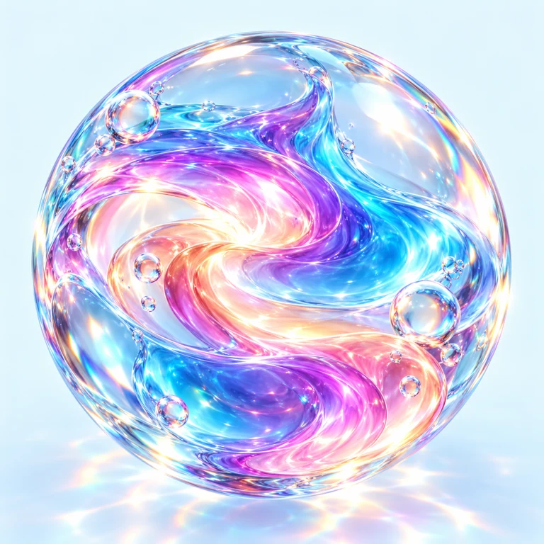

HUE RECALL / PROTOTYP
Kurz wahrnehmen.
Lange staunen.
Welche Farbe war das? Wie klang der Ton? Wie fühlte sich der Rhythmus an?

Wahrnehmen & Erinnern
HUE RECALL macht aus Farben, Tönen, Formen, Tempo und Zeit kleine Erinnerungsmomente. Du nimmst etwas wahr, probierst es selbst aus und entdeckst im Vergleich, wie nah du dran warst. Das Projekt liegt als spielbarer Prototyp vor und wird weiterentwickelt.
Dieses Spiel befindet sich in Entwicklung. Wir arbeiten Schritt für Schritt an den nächsten kleinen und großen Spielmomenten.